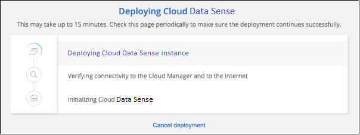

Dokumentationsänderungen beantragen
Dokumentationsänderungen beantragen In GitHub bearbeiten
In GitHub bearbeiten Leitfaden für Beitragende
Leitfaden für BeitragendeCloud-Daten sinnvoll in der Cloud implementieren
Beitragende
Führen Sie einige Schritte durch, um Cloud Data Sense in der Cloud zu implementieren.
Beachten Sie, dass Sie auch können "Stellen Sie Data Sense auf einem Linux-Host mit Internetzugang bereit". Die Art der Installation ist möglicherweise eine gute Option, wenn Sie lieber On-Premises-ONTAP-Systeme mit einer Data Sense Instanz scannen möchten, die sich auch vor Ort befindet — dies ist jedoch keine Voraussetzung. Die Software funktioniert unabhängig von der gewählten Installationsmethode genau auf die gleiche Weise.
Schnellstart
Führen Sie diese Schritte schnell durch, oder scrollen Sie nach unten zu den verbleibenden Abschnitten, um ausführliche Informationen zu erhalten.
Wenn Sie noch keinen Konnektor haben, erstellen Sie jetzt einen Konnektor. Siehe "Erstellen eines Konnektors in AWS", "Erstellen eines Connectors in Azure", Oder "Erstellen eines Konnektors in GCP".
Das können Sie auch "Stellen Sie den Connector vor Ort bereit" Auf einem Linux-Host in Ihrem Netzwerk oder in der Cloud.
Stellen Sie sicher, dass Ihre Umgebung die Voraussetzungen erfüllen kann. Dazu gehören Outbound-Internetzugang für die Instanz, Konnektivität zwischen Connector und Cloud Data Sense über Port 443 und mehr. prerequisites,Eine vollständige Liste finden Sie hier.
Die Standardkonfiguration benötigt 16 vCPUs für die Cloud Data Sense Instanz. Siehe "Weitere Details zum Instanztyp".
Starten Sie den Installationsassistenten, um die Cloud Data Sense Instanz in der Cloud zu implementieren.
Die ersten 1 TB an Daten, die Cloud Data Sense in BlueXP scannt, sind kostenlos. Um die Daten nach diesem Zeitpunkt weiterhin zu scannen, ist ein BlueXP Abonnement über Ihren Cloud-Provider Marketplace oder eine BYOL-Lizenz von NetApp erforderlich.
Einen Konnektor erstellen
Falls Sie noch keinen Connector haben, erstellen Sie bei Ihrem Cloud-Provider einen Connector. Siehe "Erstellen eines Konnektors in AWS" Oder "Erstellen eines Connectors in Azure", Oder "Erstellen eines Konnektors in GCP". In den meisten Fällen werden Sie wahrscheinlich einen Connector eingerichtet haben, bevor Sie versuchen, Cloud Data Sense zu aktivieren, weil die meisten "Für BlueXP-Funktionen ist ein Connector erforderlich", Aber es gibt Fälle, in denen Sie müssen, um eine Einrichtung jetzt.
Es gibt einige Szenarien, in denen Sie einen Connector verwenden müssen, der bei einem bestimmten Cloud-Provider implementiert wird:
-
Beim Scannen von Daten in Cloud Volumes ONTAP in AWS, Amazon FSX für ONTAP oder in AWS S3 Buckets wird in AWS ein Connector verwendet.
-
Beim Scannen von Daten in Cloud Volumes ONTAP in Azure oder in Azure NetApp Files verwenden Sie einen Konnektor in Azure.
-
Bei Azure NetApp Files muss sie in demselben Bereich bereitgestellt werden wie die Volumes, die Sie scannen möchten.
-
-
Beim Scannen von Daten in Cloud Volumes ONTAP in GCP wird ein Connector in GCP verwendet.
On-Prem-ONTAP-Systeme, File Shares anderer Anbieter, generischer S3-Objekt-Storage, Datenbanken, OneDrive-Ordner, SharePoint-Konten und Google Drive-Konten können bei der Verwendung eines dieser Cloud-Connectors gescannt werden.
Beachten Sie, dass Sie auch können "Stellen Sie den Connector vor Ort bereit" Auf einem Linux-Host in Ihrem Netzwerk oder in der Cloud. Einige Anwender planen, Data Sense On-Prem zu installieren, können auch wählen, den Connector on-Prem zu installieren.
Wie Sie sehen können, gibt es einige Situationen, in denen Sie verwenden müssen "Mehrere Anschlüsse".
Unterstützung für Regierungsregionen
Cloud Data Sense wird unterstützt, wenn der Connector in einer Regierungsregion bereitgestellt wird (AWS GovCloud, Azure Gov oder Azure DoD). Wenn Daten Sense auf diese Weise eingesetzt wird, gelten folgende Einschränkungen:
-
OneDrive-Konten, SharePoint-Konten und Google-Laufwerk Konten können nicht gescannt werden.
-
Die Funktionalität der Microsoft Azure Information Protection (AIP)-Etiketten kann nicht integriert werden.
Voraussetzungen prüfen
Die folgenden Voraussetzungen prüfen, um sicherzustellen, dass Sie über eine unterstützte Konfiguration verfügen, bevor Sie Cloud Data Sense in der Cloud implementieren.
- Outbound-Internetzugang über Cloud Data Sense aktivieren
-
Für Cloud Data Sense ist ein Outbound-Internetzugang erforderlich. Wenn Ihr virtuelles oder physisches Netzwerk einen Proxyserver für den Internetzugriff verwendet, stellen Sie sicher, dass die Datensense-Instanz über Outbound-Internetzugang verfügt, um die folgenden Endpunkte zu kontaktieren. Wenn Daten sinnvoll in der Cloud implementiert werden, befinden sich die Daten im selben Subnetz wie der Connector.
Je nachdem, ob Sie Cloud Data Sense in AWS, Azure oder GCP implementieren, können Sie die unten stehende Tabelle durchlesen.
Erforderliche Endpunkte für AWS Implementierungen:
Endpunkte Zweck https://cloudmanager.cloud.netapp.com
Kommunikation mit dem BlueXP Service, einschl. NetApp Accounts
https://netapp-cloud-account.auth0.com https://auth0.com
Kommunikation mit der BlueXP-Website zur zentralen Benutzerauthentifizierung.
https://cloud-compliance-support-netapp.s3.us-west-2.amazonaws.com https://hub.docker.com https://auth.docker.io https://registry-1.docker.io https://index.docker.io/ https://dseasb33srnrn.cloudfront.net/ https://production.cloudflare.docker.com/
Bietet Zugriff auf Software-Images, Manifeste und Vorlagen.
https://kinesis.us-east-1.amazonaws.com
Ermöglicht NetApp das Streamen von Daten aus Audit-Datensätzen.
https://cognito-idp.us-east-1.amazonaws.com https://cognito-identity.us-east-1.amazonaws.com https://user-feedback-store-prod.s3.us-west-2.amazonaws.com https://customer-data-production.s3.us-west-2.amazonaws.com
Cloud Data Sense kann auf Manifeste und Vorlagen zugreifen und diese herunterladen sowie Protokolle und Kennzahlen senden.
Erforderliche Endpunkte für Azure- und GCP-Bereitstellungen:
Endpunkte Zweck https://cloudmanager.cloud.netapp.com
Kommunikation mit dem BlueXP Service, einschl. NetApp Accounts
https://netapp-cloud-account.auth0.com https://auth0.com
Kommunikation mit der BlueXP-Website zur zentralen Benutzerauthentifizierung.
https://support.compliance.cloudmanager.cloud.netapp.com/ https://hub.docker.com https://auth.docker.io https://registry-1.docker.io https://index.docker.io/ https://dseasb33srnrn.cloudfront.net/ https://production.cloudflare.docker.com/
Bietet Zugriff auf Software-Images, Manifeste, Vorlagen und die Möglichkeit, Protokolle und Metriken zu senden.
https://support.compliance.cloudmanager.cloud.netapp.com/
Ermöglicht NetApp das Streamen von Daten aus Audit-Datensätzen.
- Stellen Sie sicher, dass BlueXP über die erforderlichen Berechtigungen verfügt
-
Stellen Sie sicher, dass BlueXP über die Berechtigungen zum Bereitstellen von Ressourcen verfügt und Sicherheitsgruppen für die Cloud Data Sense Instanz erstellt. Die neuesten BlueXP-Berechtigungen finden Sie in "Die von NetApp bereitgestellten Richtlinien".
- Überprüfen Sie Ihre vCPU-Limits
-
Stellen Sie sicher, dass das vCPU-Limit Ihres Cloud-Providers die Bereitstellung einer Instanz mit 16 Cores ermöglicht. Sie müssen das vCPU-Limit für die jeweilige Instanzfamilie in der Region, in der BlueXP ausgeführt wird, überprüfen. "Siehe die erforderlichen Instanztypen".
Weitere Informationen zu vCPU Limits finden Sie in den folgenden Links:
-
"Azure Dokumentation: VCPU Kontingente von Virtual Machines"
-
"Google Cloud Dokumentation: Ressourcenkontingente"
Beachten Sie, dass Sie Daten Sense auf einem System mit weniger CPUs und weniger RAM implementieren können, es gibt jedoch Einschränkungen bei der Verwendung dieser Systeme. Siehe "Verwenden eines kleineren Instanztyps" Entsprechende Details.
- Stellen Sie sicher, dass der BlueXP Connector auf Cloud Data Sense zugreifen kann
-
Stellen Sie die Verbindung zwischen dem Connector und der Cloud Data Sense Instanz sicher. Die Sicherheitsgruppe für den Connector muss ein- und ausgehenden Datenverkehr über Port 443 zu und aus der Instanz Data Sense zulassen. Diese Verbindung ermöglicht die Bereitstellung der Data Sense-Instanz und ermöglicht die Anzeige von Informationen auf den Registerkarten Compliance und Governance. Cloud Data Sense wird in Regierungsregionen in AWS und Azure unterstützt.
Für AWS und AWS GovCloud Implementierungen sind zusätzliche Regeln für ein- und ausgehende Sicherheitsgruppen erforderlich. Siehe "Regeln für den Connector in AWS" Entsprechende Details.
Für die Implementierung von Azure und Azure Government sind zusätzliche Regeln für ein- und ausgehende Sicherheitsgruppen erforderlich. Siehe "Regeln für den Connector in Azure" Entsprechende Details.
- Sorgen Sie dafür, dass Cloud Data Sense ausgeführt wird
-
Die Cloud Data Sense Instanz muss kontinuierlich ausgeführt werden, um Ihre Daten kontinuierlich zu scannen.
- Stellen Sie sicher, dass Webbrowser mit Cloud Data Sense verbunden ist
-
Wenn Cloud Data Sense aktiviert ist, stellen Sie sicher, dass Benutzer von einem Host, der über eine Verbindung zur Data Sense Instanz verfügt, auf die BlueXP-Schnittstelle zugreifen.
Die Instanz Data Sense verwendet eine private IP-Adresse, um sicherzustellen, dass die indizierten Daten nicht für das Internet verfügbar sind. Daher muss der Webbrowser, den Sie für den Zugriff auf BlueXP verwenden, über eine Verbindung mit dieser privaten IP-Adresse verfügen. Die Verbindung kann über eine direkte Verbindung zu Ihrem Cloud-Provider (z. B. einem VPN) oder von einem Host im selben Netzwerk wie die Data Sense Instanz erfolgen.
Implementieren Sie Daten sinnvoll in der Cloud
Führen Sie diese Schritte aus, um eine Instanz von Cloud Data Sense in der Cloud zu implementieren.
-
Klicken Sie im Navigationsmenü von BlueXP links auf Governance > Klassifizierung.
-
Klicken Sie Auf Datensense Aktivieren.

-
Klicken Sie auf Activate Data Sense, um den Assistenten zur Cloud-Bereitstellung zu starten.

-
Der Assistent zeigt den Fortschritt während der Bereitstellungsschritte an. Er wird angehalten und um Informationen gebeten, wenn es zu Problemen kommt.

-
Wenn die Instanz bereitgestellt wird, klicken Sie auf Weiter zur Konfiguration, um zur Seite Konfiguration zu gelangen.
BlueXP implementiert die Cloud Data Sense Instanz bei Ihrem Cloud-Provider.
Auf der Seite Konfiguration können Sie die Datenquellen auswählen, die Sie scannen möchten.
Das können Sie auch "Lizenzierung für Cloud Data Sense einrichten" Derzeit. Sie werden erst berechnet, wenn die Datenmenge mehr als 1 TB beträgt.